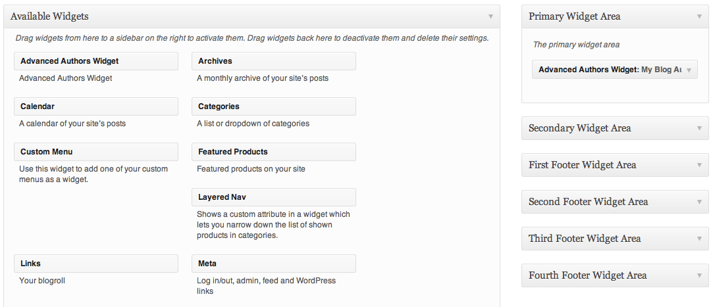

This plugin provides an advanced widget that allows you to display your blog authors in any widgetized sidebar. It includes the abilities to display author gravatars, author URLS, post counts, and bios.
The widget has been designed to integrate perfectly into just about any WordPress theme. If there are any display issues with the widget in your theme, feel free to contact me via my profile page at Code Canyon
To install the plugin, unzip the downloaded file, then upload the folder "advanced-blog-authors-widget" to your wp-content/plugins directory.
Advanced Authors Widget is extremely simple to use. Simply place the newly available Advanced Authors Widget widget into a widgetized sidebar, then configure the settings. It works just like any other widget and should fit seamlessly into any WordPress theme.

The Advanced Blog Authors Widget has 8 options that you may configure for each instance of the widget.
This is the title that is displayed in a header tag (H3) above the list of blog authors. Enter whatever title you wish, or leave it blank to disable the title.
This is the number of posts the author has published. If checked, it will display in the following format: Author name (#) - The # symbol represents the number of posts the author has written.
This option will enable you to display the author's bio (as set in their WordPress profile). If checked, the bio will be displayed beneath the author's name.
This option is useful for those users that choose to enable the Author Gravatar option (below). By checking this box, the author's bio will be "forced" below the gravatar, creating a cleaner layout.
By checking this option, each author's profile image will be displayed next to their name. Author's may set their gravatar images at http://gravatar.com.
This is the size of the gravatar image in pixels. The default size is 40 px, but you may enter whatever value you wish. Please do not include "px" after your value. So, for example, if you wanted a 50px gravatar, you would enter "50" in this field.
Note, gravatars are always square.
Depending on your theme, you may wish to "float" the gravatar to either the left or the right. This means that the author name will "float" up next to the gravatar, instead of being pushed down below it.
There are two places you can link the author's name: their website url, as entered in the "website" field in their WordPress profiles; or their author's archive page. The author's archive page will display a list of all posts by that author. You may also choose to not link the author name at all.